A 42 × 42 rounded button sits above Android’s three-button navigation bar, outside the live browser stream. Its mark is the Room list’s brass circle and ring. Tap it and the control travels left as one pill grows leftward. Type or speak to Moth, the agent who owns this view. A translucent recent transcript sits immediately above the pill. Tap the same mark at the pill’s left edge to collapse both.
One button, one pillNo separate sheet headerArtifact or screen context attaches silently390 × 844 phone + 400 px desktop work pane
Artifact viewer · phone
1 · CollapsedOnly the gold attention mark remains.2 · ExpandingThe button moves to the left edge while the pill grows from the right.
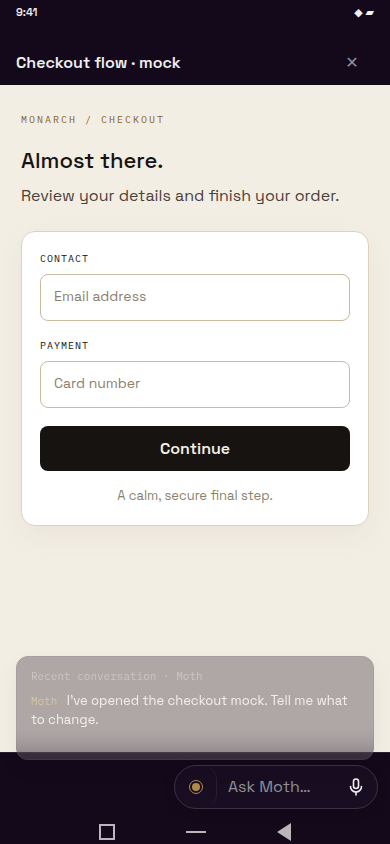
3 · Expanded, typingText goes to Moth; the current artifact is attached without a visible chip.
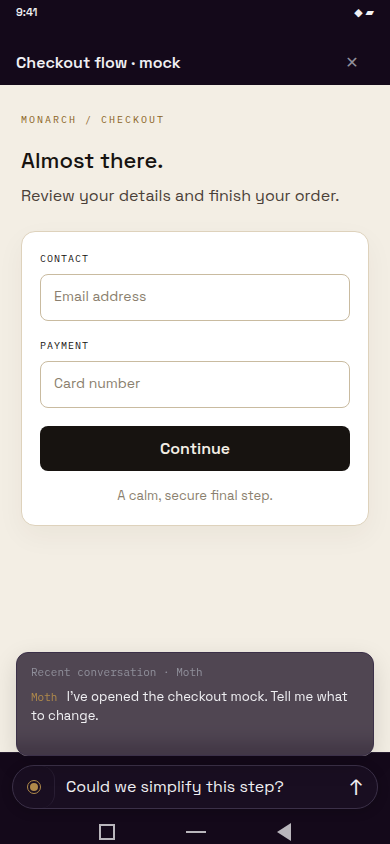
4 · Expanded, voiceThe same pill holds the dictation waveform and send control.
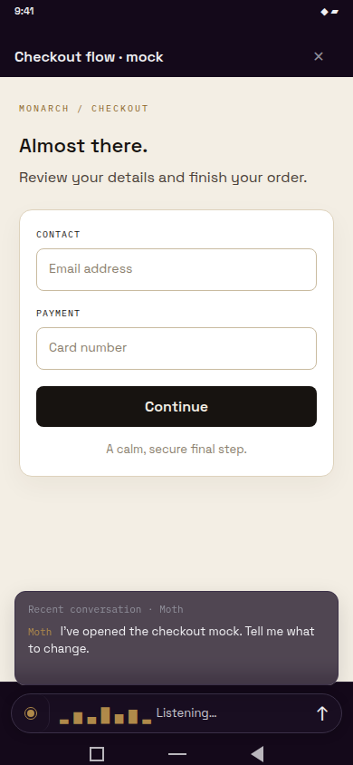
5 · Agent replyThe newest exchange reads above the pill in a translucent transcript.
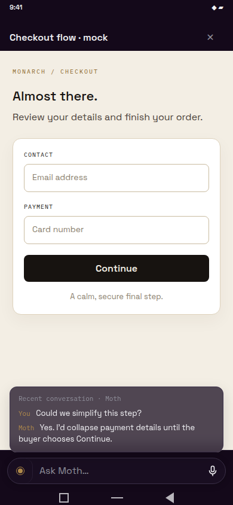
6 · Collapsed againThe left glyph collapses pill and transcript back to the single button.
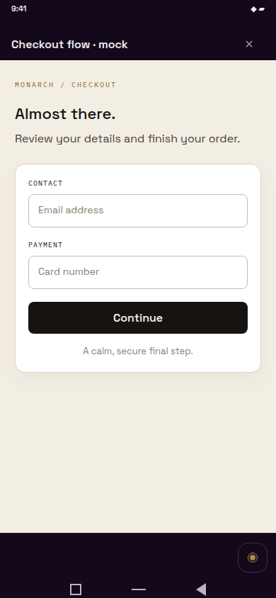
Live computer use · phone
1 · CollapsedBrowser taps still land in the stream; the button sits below it.
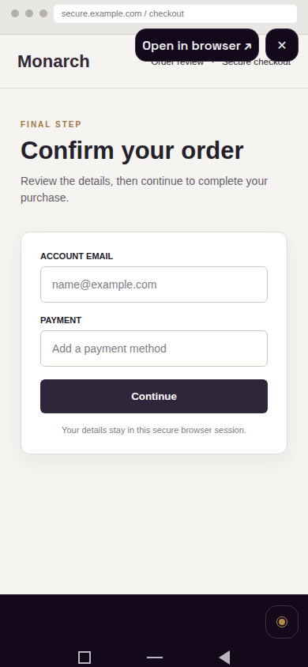
2 · ExpandingSame leftward pill motion while the computer page stays visible.
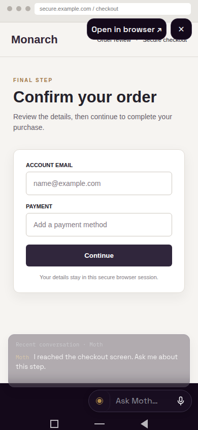
3 · Expanded, typingA question to Moth silently carries a snapshot of this browser screen.
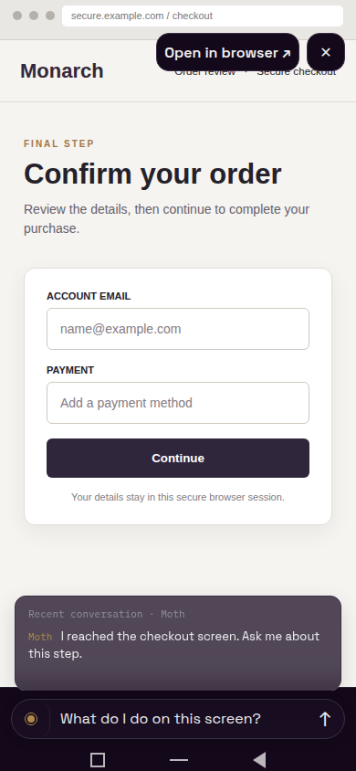
4 · Expanded, voiceDictation happens in place without leaving the viewer.
6 · Collapsed againReturning to the single control reveals the full browser viewport.
Desktop work pane and Bone theme
Desktop · collapsedOne control at the bottom of the 400 px work pane.
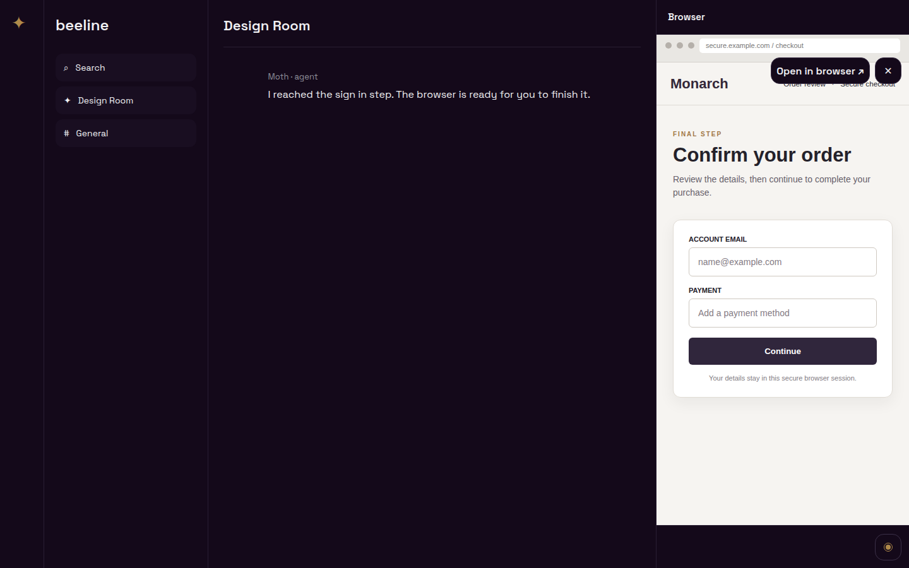
Bone · collapsedThe same control inherits Bone colors and preserves the touch boundary.
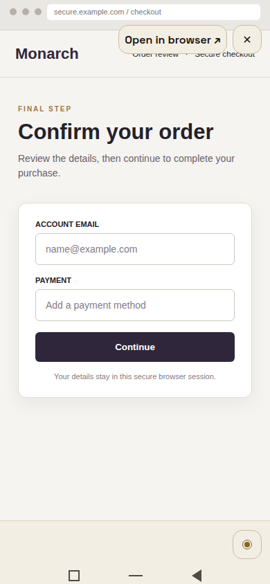
Desktop · replyExpanded pill and recent transcript occupy only the browser pane.
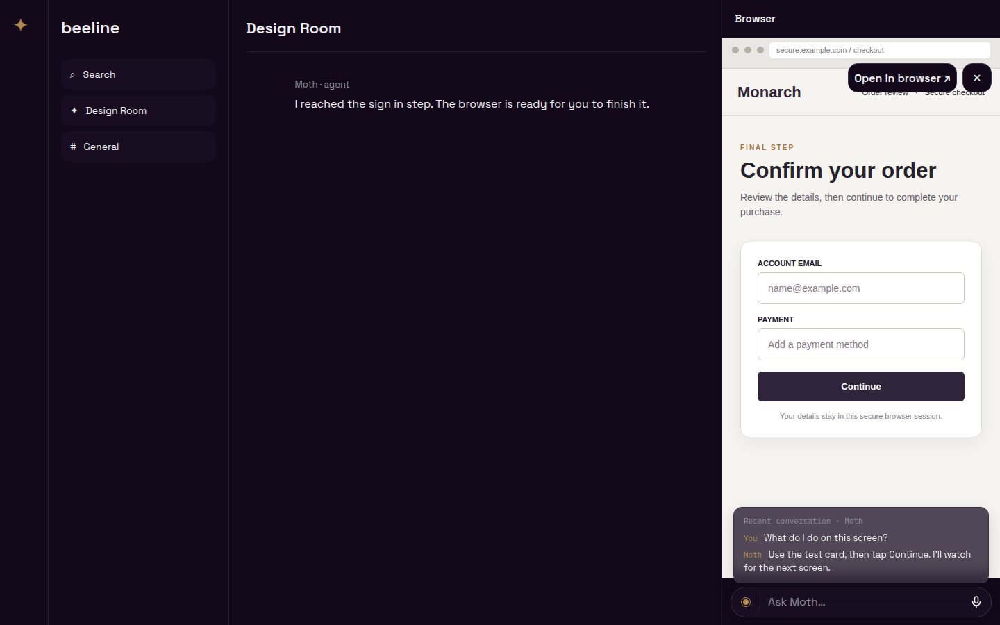
The frame harness renders the current ArtifactViewerScreen and ComputerSessionViewer from app source through React Native Web, with the app’s Space Grotesk and IBM Plex Mono fonts. The attention mark copies ConversationRow’s 14 px ring and 8 px brass dot exactly; implementation will extract that treatment for reuse after approval. The pill, transcript and sample artifact/browser pages are visual fixtures. Rebuild with node .lavish/viewer-composer/build.mjs and serve this directory. Production implementation waits for approval and the parallel computer-use viewer change.